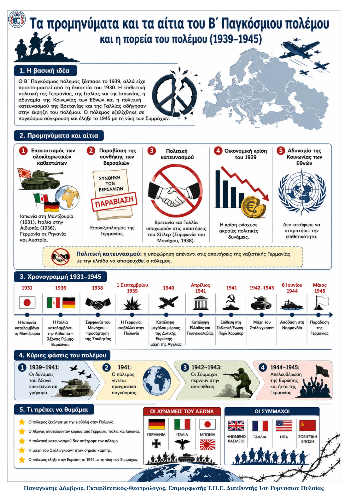

Δεν βρέθηκε η λέξη ή η φράση μέσα στην ενότητα.
1Η βασική ιδέα
2Ιστορικό πλαίσιο
- Η συνθήκη των Βερσαλιών επιβάρυνε οικονομικά τη Γερμανία και πλήγωσε το εθνικό αίσθημα των Γερμανών.
- Η οικονομική κρίση μετά το 1929 ενίσχυσε ηγέτες που παρουσιάζονταν ως «σωτήρες» και επέβαλαν ολοκληρωτικά καθεστώτα.
- Η Ιαπωνία, η φασιστική Ιταλία και η ναζιστική Γερμανία ακολούθησαν επεκτατική πολιτική από τις αρχές της δεκαετίας του 1930.
- Η Βρετανία και η Γαλλία φοβούνταν έναν νέο πόλεμο και τη σοβιετική επιρροή. Για αυτό αντέδρασαν αργά στη γερμανική επιθετικότητα.
3Αίτια και πορεία προς την έκρηξη
Πώς οδηγηθήκαμε στον πόλεμο
| 1931–1936 Ιαπωνική και ιταλική επέκταση. Η Γερμανία επανεξοπλίζεται και παραβιάζει τη συνθήκη των Βερσαλιών. |
→ | 1938–Αύγ. 1939 Προσάρτηση της Αυστρίας, συμφωνία του Μονάχου και Σύμφωνο Ρίμπεντροπ–Μολότοφ. |
→ | 1 Σεπτεμβρίου 1939 Η Γερμανία εισβάλλει στην Πολωνία. Βρετανία και Γαλλία κηρύσσουν τον πόλεμο. |
|---|
4Τα βαθύτερα αίτια
- Οι ταπεινωτικοί όροι μετά τον Α΄ Παγκόσμιο πόλεμο προκάλεσαν οικονομική εξάντληση και αγανάκτηση.
- Τα ανικανοποίητα εδαφικά αιτήματα κρατών και εθνοτήτων τροφοδότησαν την επιθυμία αλλαγής των συνθηκών.
- Η παγκόσμια οικονομική κρίση και η ανεργία ευνόησαν την άνοδο αυταρχικών ηγετών.
- Ο ναζισμός και ο φασισμός στηρίζονταν στον ακραίο εθνικισμό, τη βία, τον αντικομμουνισμό και την κατάκτηση νέων εδαφών.
- Η Κοινωνία των Εθνών δεν μπόρεσε να επιβάλει μέτρα, ενώ οι δυτικές δυνάμεις άργησαν να αντιδράσουν.
5Ο Β΄ Παγκόσμιος πόλεμος • εξέλιξη και λήξη
Τα κύρια σημεία
Η προέλαση του Άξονα, 1939–1941 Ο Άξονας ήταν η συμμαχία της Γερμανίας, της Ιταλίας και της Ιαπωνίας. Με την τακτική του πολέμου-αστραπή, δηλαδή γρήγορες επιθέσεις με αεροπορία και τεθωρακισμένα, η Γερμανία κατέλαβε την Πολωνία και πολλές ευρωπαϊκές χώρες. Η Γαλλία συνθηκολόγησε το 1940, όμως η Βρετανία άντεξε. Τον Απρίλιο του 1941 καταλήφθηκαν η Γιουγκοσλαβία και η Ελλάδα. |
Κατοχή, διώξεις και αντίσταση Η κατεχόμενη Ευρώπη οργανώθηκε σύμφωνα με τα συμφέροντα της ναζιστικής Γερμανίας. Οι λαοί υπέστησαν οικονομική εκμετάλλευση, προπαγάνδα, βασανιστήρια και μαζικές εκτελέσεις. Οι Εβραίοι και οι Ρομά εξοντώθηκαν συστηματικά στο Ολοκαύτωμα, δηλαδή στη σχεδιασμένη μαζική εξόντωση πληθυσμών από τους ναζί. Απέναντι στους κατακτητές αναπτύχθηκαν κινήματα αντίστασης. |
|
|---|---|---|
Η ανατροπή της πορείας Τον Ιούνιο του 1941 η Γερμανία επιτέθηκε στη Σοβιετική Ένωση, αλλά δεν κατέλαβε τη Μόσχα και το Λένινγκραντ. Η ήττα στο Στάλινγκραντ, το 1942–1943, έγινε σημείο καμπής και ανάγκασε τους Γερμανούς να υποχωρούν. Στη Βόρεια Αφρική οι Σύμμαχοι επικράτησαν το 1943. Μετά την επίθεση στο Περλ Χάρμπορ, οι ΗΠΑ μπήκαν στον πόλεμο. |
Το τέλος Στις 6 Ιουνίου 1944 οι Σύμμαχοι αποβιβάστηκαν στη Νορμανδία και άνοιξαν δυτικό μέτωπο. Ταυτόχρονα, ο σοβιετικός στρατός προέλαυνε από τα ανατολικά. Η Γερμανία συνθηκολόγησε τον Μάιο του 1945. Τον Αύγουστο οι ΗΠΑ έριξαν ατομικές βόμβες στη Χιροσίμα και στο Ναγκασάκι. Η Ιαπωνία συνθηκολόγησε. Ο πόλεμος άφησε τεράστια ανθρώπινη και υλική καταστροφή. |
6Χρονογραμμή
| 1939 Εισβολή στην Πολωνία και έναρξη. |
1941 Επίθεση στην ΕΣΣΔ και είσοδος των ΗΠΑ. |
1942–1943 Ήττα της Γερμανίας στο Στάλινγκραντ. |
1944 Απόβαση των Συμμάχων στη Νορμανδία. |
1945 Συνθηκολόγηση Γερμανίας και Ιαπωνίας. |
|---|
7Τι πρέπει να θυμάμαι
- Ο πόλεμος προετοιμάστηκε από παλιές αδικίες, την οικονομική κρίση, τον ολοκληρωτισμό και τον επεκτατισμό.
- Η πολιτική κατευνασμού δεν σταμάτησε τη ναζιστική Γερμανία· την ενθάρρυνε να συνεχίσει.
- Ο Άξονας κυριάρχησε γρήγορα στην Ευρώπη, αλλά δεν νίκησε τη Βρετανία και τη Σοβιετική Ένωση.
- Το Στάλινγκραντ και η είσοδος των ΗΠΑ άλλαξαν την πορεία του πολέμου.
- Η κατοχή συνδέθηκε με βία, οικονομική εκμετάλλευση, Ολοκαύτωμα και κινήματα αντίστασης.
- Η νίκη των Συμμάχων ήρθε από δυτικά και ανατολικά, αλλά ο πόλεμος άφησε τεράστια ανθρώπινη καταστροφή.
